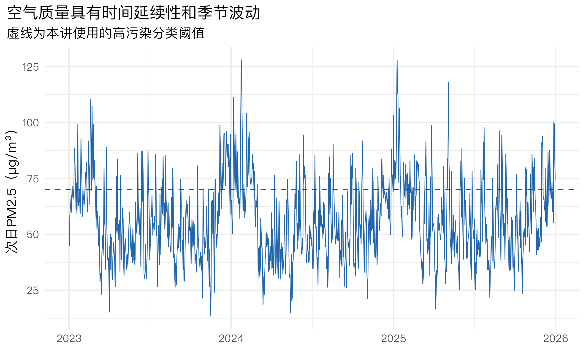
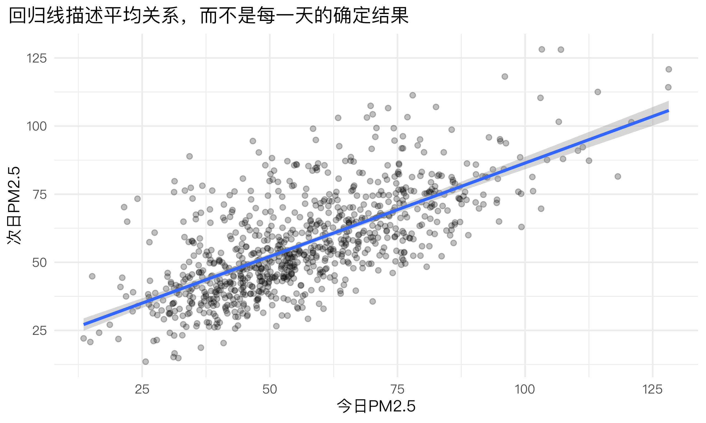
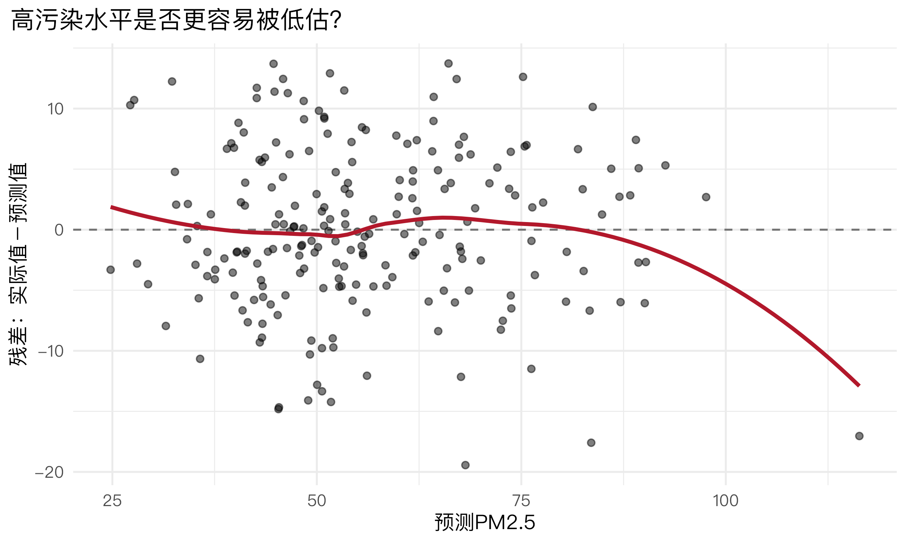
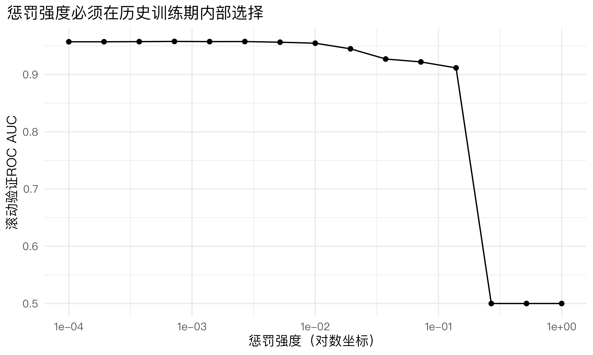

install.packages(c(
"tidymodels", "tidyverse", "glmnet", "systemfonts", "ragg"
))机器学习（二）：线性回归、逻辑回归与正则化
以城市空气质量预测与重污染预警为例
本讲的中心问题
环保部门希望提前一天预测空气污染水平，以安排监测、执法、健康提示和应急响应。本讲用同一份数据回答两个不同问题：次日PM2.5是多少？次日是否可能达到预警阈值？
1 课程安排与学习目标
本讲按照 2课时（每课时45分钟） 设计。
| 课时 | 核心内容 | 课堂产出 |
|---|---|---|
| 第1课时 | 线性回归、系数、残差、RMSE、MAE和时间划分 | 预测次日PM2.5浓度 |
| 第2课时 | 逻辑回归、概率、优势比和Lasso正则化 | 预测次日重污染风险 |
完成本讲后，学生应能：
- 根据目标变量类型选择线性回归或逻辑回归；
- 解释回归系数、预测值、残差和主要评价指标；
- 说明为什么时间序列型政策数据不能随意随机划分；
- 使用
recipe、model和workflow建立模型； - 解释逻辑回归的概率和优势比；
- 说明Ridge、Lasso和弹性网的基本作用；
- 区分污染预测、政策解释和减排措施的因果评估。
首次运行前安装R包
2 从公共政策问题定义预测任务
2.1 为什么需要空气质量预测？
空气质量预测可以服务于：
- 提前发布健康风险提示；
- 调整重点污染源巡查和监测频率；
- 安排公共交通和道路管理措施；
- 为重污染天气应急响应提供信息；
- 评估监测网络和预警系统的实际表现。
但预测结果不能直接回答“某项限排政策是否有效”。预测模型关注未来结果是否能被准确识别；政策效果需要实验或准实验设计识别反事实。
2.2 一个数据集，两个学习任务
| 政策问题 | 目标变量 | 任务类型 | 主要指标 |
|---|---|---|---|
| 明天PM2.5浓度大约是多少？ | pm25_next_day |
回归 | RMSE、MAE、\(R^2\) |
| 明天是否超过教学设定的70 μg/m³预警线？ | high_pollution |
二分类 | ROC AUC、敏感度、特异度 |
二分类目标更接近预警行动，但会损失信息：74和76 μg/m³被分到不同类别，76和150 μg/m³却处在同一类别。因此应根据决策任务定义目标，而不是先选算法。
2.3 先判断方法是否适用
| 方法 | 较适合的任务 | 使用前需要检查 | 不宜直接使用的情形 |
|---|---|---|---|
| 线性回归 | 目标为连续数值，关注条件均值或数值预测 | 关系是否大致线性、残差结构、异常值、未来特征是否可得 | 明显非线性且无法通过变换或交互项处理；用未来信息预测过去 |
| 逻辑回归 | 目标为两个类别，需要输出事件概率 | 事件定义、类别比例、连续变量与对数优势的关系、完全分离 | 事件极少而样本不足；把概率系数直接解释成因果效应 |
| Lasso逻辑回归 | 特征较多、共线性较强，希望控制过拟合 | 数值变量是否标准化、惩罚参数是否只在训练数据中选择 | 变量很少且模型稳定；需要对单个原始系数作无偏因果解释 |
三种方法共同的前提
模型中使用的变量必须在实际预测时点已经获得，训练数据与未来应用对象应具有基本可比性，并应在独立的未来测试期检验表现。本讲的数据有明显时间顺序，所以“过去训练、未来测试”比随机划分更合适。
3 准备自带的模拟空气质量数据
3.1 数据生成逻辑
下面模拟约三年的逐日数据。为了让文件能够独立运行，不需要下载外部数据。模拟值只用于教学，不代表任何城市的真实监测结果。
set.seed(2026)
dates <- seq.Date(
from = as.Date("2023-01-01"),
to = as.Date("2025-12-31"),
by = "day"
)
n_days <- length(dates)
air_base <- tibble(
date = dates,
month = lubridate::month(date),
weekend = factor(if_else(
lubridate::wday(date, week_start = 1) >= 6, "是", "否"
)),
season = factor(case_when(
month %in% c(12, 1, 2) ~ "冬季",
month %in% c(3, 4, 5) ~ "春季",
month %in% c(6, 7, 8) ~ "夏季",
TRUE ~ "秋季"
)),
# 假定这些是预测次日时已经获得的天气预报和运行信息。
forecast_temp =
18 + 10 * sin(2 * pi * (lubridate::yday(date) - 80) / 365) +
rnorm(n_days, 0, 3),
forecast_wind = pmax(0.3, rnorm(n_days, 2.7, 1.0)),
forecast_humidity = pmin(98, pmax(30, rnorm(n_days, 70, 11))),
forecast_rain = rbinom(n_days, 1, 0.26),
traffic_index = pmax(
20,
58 - 12 * (weekend == "是") + rnorm(n_days, 0, 7)
),
industrial_load = pmax(
30,
68 - 6 * (weekend == "是") + rnorm(n_days, 0, 8)
),
# 少数静稳天气会明显增加污染积累风险。
stagnant_episode = rbinom(n_days, 1, 0.12)
)
# 污染具有延续性，因此用循环模拟今天与昨天的关联。
pm25 <- numeric(n_days)
pm25[1] <- 48
for (i in 2:n_days) {
pm25[i] <- pmax(
5,
5 +
0.55 * pm25[i - 1] +
0.10 * air_base$forecast_humidity[i] -
2.50 * air_base$forecast_wind[i] -
8.00 * air_base$forecast_rain[i] +
0.12 * air_base$traffic_index[i] +
0.15 * air_base$industrial_load[i] +
10.00 * (air_base$season[i] == "冬季") +
30.00 * air_base$stagnant_episode[i] +
rnorm(1, 0, 7)
)
}
air_data <- air_base |>
mutate(
# 每一行用“今天的浓度+明天的预报信息”预测明天浓度。
# 明确指定 dplyr::lag()，避免与 stats::lag() 发生函数名冲突。
pm25_today = dplyr::lag(pm25),
pm25_next_day = pm25,
# 教学中用70作为模拟预警阈值；真实应用必须依据正式标准定义。
high_pollution = factor(
if_else(pm25_next_day > 70, "高污染", "未达阈值"),
# yardstick默认把第一个水平视为关注事件。
levels = c("高污染", "未达阈值")
)
) |>
filter(!is.na(pm25_today)) |>
select(-month)
# 模拟少量监测与预报缺失。
set.seed(2027)
air_data$forecast_wind[sample(seq_len(nrow(air_data)), 18)] <- NA
air_data$traffic_index[sample(seq_len(nrow(air_data)), 16)] <- NA
air_data
如何理解数据输出？
每行是一个预测日期。pm25_today 是预测时已经观测到的最近浓度；带有 forecast_ 前缀的变量是假定已获得的次日预报；pm25_next_day 和 high_pollution 是两种目标。date 用于保证时间顺序，不直接进入本讲模型。
glimpse(air_data)
#> Rows: 1,095
#> Columns: 13
#> $ date <date> 2023-01-02, 2023-01-03, 2023-01-04, 2023-01-05, 202…
#> $ weekend <fct> 否, 否, 否, 否, 否, 是, 是, 否, 否, 否, 否, 否, 是, 是, 否, 否, 否, 否…
#> $ season <fct> 冬季, 冬季, 冬季, 冬季, 冬季, 冬季, 冬季, 冬季, 冬季, 冬季, 冬季, 冬季, 冬季, …
#> $ forecast_temp <dbl> 5.0199232, 8.7170751, 8.0883543, 6.3887833, 0.889384…
#> $ forecast_wind <dbl> 2.872529, 2.102155, 3.184097, 3.535424, 3.575148, 1.…
#> $ forecast_humidity <dbl> 72.37394, 84.82184, 72.61140, 82.77111, 75.37115, 42…
#> $ forecast_rain <int> 1, 0, 0, 0, 0, 1, 1, 0, 0, 0, 0, 0, 0, 0, 1, 0, 1, 0…
#> $ traffic_index <dbl> 51.42463, 67.48088, 69.47746, 63.73480, 65.45305, 37…
#> $ industrial_load <dbl> 73.61721, 62.62936, 78.86257, 74.46975, 63.16202, 62…
#> $ stagnant_episode <int> 0, 0, 0, 0, 0, 0, 0, 0, 0, 0, 0, 1, 0, 0, 0, 0, 0, 0…
#> $ pm25_today <dbl> 48.00000, 44.76306, 58.91656, 61.37129, 64.12366, 67…
#> $ pm25_next_day <dbl> 44.76306, 58.91656, 61.37129, 64.12366, 67.34539, 59…
#> $ high_pollution <fct> 未达阈值, 未达阈值, 未达阈值, 未达阈值, 未达阈值, 未达阈值, 高污染, 未达阈值, 未达阈值,…
air_audit <- air_data |>
summarise(
days = n(),
start_date = min(date),
end_date = max(date),
mean_pm25 = mean(pm25_next_day),
median_pm25 = median(pm25_next_day),
high_pollution_rate = mean(high_pollution == "高污染"),
missing_wind = sum(is.na(forecast_wind)),
missing_traffic = sum(is.na(traffic_index))
)
air_audit这份模拟数据共有 1095 个预测日，从 2023-01-02 到 2025-12-31。次日PM2.5均值约为 56.7 μg/m³，中位数约为 54.4 μg/m³；两者的差异可帮助判断分布是否受少数高值拉动。
高污染日占 23.4%。如果这一比例明显低于50%，那么一个“每天都预测未达阈值”的模型也可能得到很高的准确率，因此后面必须同时查看敏感度。数据中风速缺失 18 条、交通指数缺失 16 条，说明预处理需要明确填补规则，而不能让缺失记录在建模时被静默删除。
ggplot(air_data, aes(date, pm25_next_day)) +
geom_line(linewidth = 0.35, colour = "#2166AC") +
geom_hline(
yintercept = 70,
linetype = 2,
colour = "#B2182B"
) +
labs(
x = NULL,
y = "次日PM2.5（μg/m³）",
title = "空气质量具有时间延续性和季节波动",
subtitle = "虚线为本讲使用的高污染分类阈值"
)
图中连续多日升高或降低，说明相邻日期并非彼此独立。若将未来记录随机放进训练集，可能高估真实预测表现，因此本讲按时间先后划分。
4 第1课时：线性回归预测次日PM2.5
4.1 线性回归在估计什么？
线性回归表示为：
\[ Y_i=\beta_0+\beta_1X_{i1}+\cdots+\beta_pX_{ip}+\varepsilon_i \]
- 预测值 \(\hat Y_i\) 是给定特征后的条件均值；
- 残差 \(e_i=Y_i-\hat Y_i\) 是实际值与预测值的差；
- \(\beta_j\) 表示其他变量不变时，\(X_j\) 每增加一个单位对应的条件均值变化；
- 最小二乘法选择使残差平方和最小的系数。
“其他变量不变”是统计条件，不是实验控制。因此，风速系数反映条件关联，不能直接当作某项政策干预的因果效应。
线性回归的适用条件
本讲使用线性回归，是因为目标 pm25_next_day 是连续数值，而且我们首先关心多个预测变量与次日污染条件均值之间的近似线性关系。实际使用时应注意：
- 连续变量与结果的关系应大致线性；存在弯曲关系时可加入变换、样条或改用树模型；
- 用于解释系数和区间时，应检查残差是否存在异方差、强自相关和高影响点；
- 不要求每个预测变量都服从正态分布，“正态性”主要涉及小样本下的误差推断；
- 预测超出训练数据范围时属于外推，误差通常更不可靠；
- 对时间数据，加入
pm25_today只能部分处理延续性，仍需通过时间划分和残差诊断检查稳定性。
4.2 用过去预测未来
regression_data <- air_data |>
# 分类目标由连续目标直接产生，不能反过来作为预测变量。
select(-high_pollution) |>
arrange(date)
# 前80%日期用于训练，最后20%模拟未来测试期。
regression_split <- initial_time_split(
regression_data,
prop = 0.80
)
regression_train <- training(regression_split)
regression_test <- testing(regression_split)
regression_split_summary <- tibble(
dataset = c("训练期", "测试期"),
start = c(min(regression_train$date), min(regression_test$date)),
end = c(max(regression_train$date), max(regression_test$date)),
days = c(nrow(regression_train), nrow(regression_test)),
mean_pm25 = c(
mean(regression_train$pm25_next_day),
mean(regression_test$pm25_next_day)
)
)
regression_split_summary训练期包含 876 天（2023-01-02 至 2025-05-26），测试期包含 219 天（2025-05-27 至 2025-12-31）。测试期严格晚于训练期，因此没有把未来记录泄漏到训练中。
训练期次日PM2.5均值为 56.9 μg/m³，测试期为 56 μg/m³。两者不必完全相同；这种差异正是模型部署到未来时会遇到的分布变化。
4.3 简单线性回归：今天与明天
simple_lm <- lm(
pm25_next_day ~ pm25_today,
data = regression_train
)
simple_lm_terms <- broom::tidy(simple_lm, conf.int = TRUE)
simple_lm_fit <- broom::glance(simple_lm) |>
select(r.squared, adj.r.squared, sigma, nobs)
simple_lm_termssimple_lm_fit
如何解释结果？
本次运行中，pm25_today 的系数为 0.685，95%置信区间约为 [0.637, 0.734]。这表示在这份训练数据中，今日PM2.5每增加10 μg/m³，次日条件均值平均增加约 6.9 μg/m³，体现污染的时间延续性。
模型的训练期 \(R^2\) 为 0.47，即单用今日浓度可解释约 47.0% 的次日浓度差异。这个数值描述训练期拟合程度，不能代替未来测试误差；置信区间不跨0也只说明条件关联较稳定，不表示预测一定准确，更不表示因果关系。
ggplot(regression_train, aes(pm25_today, pm25_next_day)) +
geom_point(alpha = 0.25) +
geom_smooth(method = "lm", se = TRUE) +
labs(
x = "今日PM2.5",
y = "次日PM2.5",
title = "回归线描述平均关系，而不是每一天的确定结果"
)
回归线向上表示延续性，但散点仍有较大离散，因为风、雨、交通、工业负荷和随机扰动也会影响次日浓度。
4.4 多元模型的 recipe
recipe() 是预处理蓝图，声明目标、特征和转换步骤；prep() 从训练数据估计中位数、类别水平等规则；bake() 把规则应用到新数据。加入 workflow 后，后两步会在每次训练中自动完成。
regression_recipe <- recipe(
pm25_next_day ~ pm25_today + forecast_temp + forecast_wind +
forecast_humidity + forecast_rain + traffic_index +
industrial_load + stagnant_episode + weekend + season,
data = regression_train
) |>
# 只用相应训练窗口的中位数填补数值缺失。
step_impute_median(all_numeric_predictors()) |>
# 处理分类缺失和未来可能出现的新水平。
step_unknown(all_nominal_predictors()) |>
step_novel(all_nominal_predictors()) |>
# 将季节、周末等类别转换为0/1哑变量。
step_dummy(all_nominal_predictors()) |>
step_zv(all_predictors())
regression_recipe打印结果中的 Trained: FALSE 表示这仍是方案，没有提前从测试期学习任何填补值或类别信息。
这里使用中位数填补，是因为只有少量数值缺失，且本讲重点是演示完整预测流程。若缺失与污染过程、设备故障或监测站调整系统相关，中位数填补可能低估不确定性，应进一步分析缺失机制，加入缺失指示变量或采用多重插补。
4.5 滚动时间重采样
普通随机5折会打乱日期。这里在训练期内部建立多个“过去训练—随后60天验证”的滚动窗口。
regression_folds <- rolling_origin(
regression_train,
initial = 540, # 第一个窗口用前540天训练
assess = 60, # 每次评价随后的60天
cumulative = TRUE,
skip = 59 # 每隔约60天建立一个评价窗口
)
regression_folds本次参数生成 5 个滚动窗口。每个窗口用至少540天历史数据训练，再评价随后的60天；cumulative = TRUE 表示训练窗口随时间逐渐扩展，更接近实际系统定期吸收新数据的方式。若政策环境或监测设备发生结构性变化，使用无限扩展窗口可能把过旧数据带入模型，此时可改用固定长度的滑动窗口。
4.6 建立工作流并评价
linear_model <- linear_reg() |>
set_engine("lm")
linear_workflow <- workflow() |>
add_recipe(regression_recipe) |>
add_model(linear_model)
regression_metrics <- metric_set(rmse, mae, rsq)
linear_cv <- fit_resamples(
linear_workflow,
resamples = regression_folds,
metrics = regression_metrics
)
linear_cv_metrics <- collect_metrics(linear_cv)
linear_cv_metrics- RMSE 对大误差惩罚更强，单位仍为 μg/m³；
- MAE 是绝对误差平均值，解释更直接；
- \(R^2\) 衡量结果差异中被预测解释的比例；
std_err较大说明不同时间窗口表现不稳定，可能存在季节变化。
在本次滚动验证中，多元线性回归的平均RMSE为 6.79 μg/m³，MAE为 5.34 μg/m³，\(R^2\) 为 0.813。MAE可以直观理解为：在这些历史验证窗口中，模型每天的预测与真实值平均相差约 5.3 μg/m³；RMSE更高，是因为它对少数较大的预测错误惩罚更重。
4.7 与朴素基准进行未来测试
空气质量有延续性，因此合理基准不是只预测总体均值，而是直接把“今天的浓度”作为“明天的预测”。
linear_fit <- fit(linear_workflow, data = regression_train)
linear_test_pred <- bind_cols(
regression_test,
predict(linear_fit, new_data = regression_test)
)
persistence_pred <- regression_test |>
mutate(.pred = pm25_today)
linear_test_metrics <- metric_set(rmse, mae, rsq)(
linear_test_pred,
truth = pm25_next_day,
estimate = .pred
) |>
mutate(model = "多元线性回归")
persistence_metrics <- metric_set(rmse, mae, rsq)(
persistence_pred,
truth = pm25_next_day,
estimate = .pred
) |>
mutate(model = "持续性基准")
regression_test_comparison <- bind_rows(linear_test_metrics, persistence_metrics) |>
select(model, .metric, .estimate) |>
arrange(.metric, model)
regression_test_comparison多元模型只有在RMSE和MAE低于持续性基准时，才说明天气和运行特征带来了额外预测价值。若复杂模型未超过简单基准，应优先检查特征质量和预测时点，而不是继续堆叠算法。
用具体数值比较模型
未来测试期中，多元线性回归的RMSE为 6.63，持续性基准为 15.01 μg/m³；相对改善约为 55.9%。
如果这个百分比为正，表示多元模型降低了误差；若为负，则说明它还不如直接使用今日浓度。这里的比较比单独报告一个 \(R^2\) 更能回答“复杂模型是否为实际预测增加了价值”。
linear_test_pred |>
mutate(residual = pm25_next_day - .pred) |>
ggplot(aes(.pred, residual)) +
geom_hline(yintercept = 0, linetype = 2, colour = "grey45") +
geom_point(alpha = 0.5) +
geom_smooth(se = FALSE, colour = "#B2182B") +
labs(
x = "预测PM2.5",
y = "残差：实际值－预测值",
title = "高污染水平是否更容易被低估？"
)
残差大于0表示模型低估污染，残差小于0表示高估。若高预测区大量残差为正，说明模型可能系统性低估高污染事件，这对预警尤其重要。
5 第2课时：逻辑回归与重污染预警
5.1 从浓度预测转向风险概率
逻辑回归建立特征与事件对数优势之间的关系：
\[ \log\left(\frac{p}{1-p}\right) =\beta_0+\beta_1X_1+\cdots+\beta_pX_p \]
其中 \(p\) 是次日高污染概率。逻辑函数保证预测概率位于0和1之间。模型名称虽有“回归”，但目标为类别时解决的是分类问题。
系数取指数得到优势比：大于1表示事件优势上升，小于1表示下降。优势比1.5不等于概率提高50个百分点，因为概率变化还取决于原来的基准概率。
逻辑回归的适用条件
本讲使用逻辑回归，是因为 high_pollution 只有“高污染”和“未达阈值”两个水平，而且治理部门需要的是事件概率。使用时要检查：
- 关注事件必须定义清楚，并确认因子水平中“高污染”被设为事件；
- 每个有效参数需要有足够的事件样本，事件过少时系数和优势比会很不稳定；
- 连续变量应与对数优势近似线性，而不是要求它与概率本身线性；必要时可加入非线性项；
- 不应存在完全分离，例如某个变量取值一出现就100%对应高污染，否则普通极大似然估计可能发散；
- ROC AUC高只表示排序能力较好；若要把概率用于预警，还需检查概率校准和阈值成本。
5.2 分类数据与泄漏检查
classification_data <- air_data |>
# pm25_next_day直接决定high_pollution，预测时必须删除。
select(-pm25_next_day) |>
arrange(date)
classification_split <- initial_time_split(
classification_data,
prop = 0.80
)
classification_train <- training(classification_split)
classification_test <- testing(classification_split)
classification_balance <- bind_rows(
classification_train |> count(high_pollution) |> mutate(dataset = "训练期"),
classification_test |> count(high_pollution) |> mutate(dataset = "测试期")
) |>
group_by(dataset) |>
mutate(proportion = n / sum(n)) |>
ungroup()
classification_balance训练期共有 876 天，其中高污染日 213 天，占 24.3%；测试期高污染日为 43 天，占 19.6%。
时间划分不会强制两段时期比例相同。比例变化可能来自季节和年份差异，这比随机分层更接近真实未来部署。若测试期事件比例显著变化，准确率会随之改变，因此应同时报告不依赖单一类别比例的排序指标和分类指标。
5.3 逻辑回归工作流
classification_recipe <- recipe(
high_pollution ~ pm25_today + forecast_temp + forecast_wind +
forecast_humidity + forecast_rain + traffic_index +
industrial_load + stagnant_episode + weekend + season,
data = classification_train
) |>
step_impute_median(all_numeric_predictors()) |>
step_unknown(all_nominal_predictors()) |>
step_novel(all_nominal_predictors()) |>
step_dummy(all_nominal_predictors()) |>
step_zv(all_predictors())
logistic_model <- logistic_reg() |>
set_engine("glm") |>
set_mode("classification")
logistic_workflow <- workflow() |>
add_recipe(classification_recipe) |>
add_model(logistic_model)
logistic_workflow
#> ══ Workflow ════════════════════════════════════════════════════════════════════
#> Preprocessor: Recipe
#> Model: logistic_reg()
#>
#> ── Preprocessor ────────────────────────────────────────────────────────────────
#> 5 Recipe Steps
#>
#> • step_impute_median()
#> • step_unknown()
#> • step_novel()
#> • step_dummy()
#> • step_zv()
#>
#> ── Model ───────────────────────────────────────────────────────────────────────
#> Logistic Regression Model Specification (classification)
#>
#> Computational engine: glmrecipe 负责把原始环境数据转换成模型矩阵，model 指定逻辑回归，workflow 将二者绑定。打印结果只是核查配置，并未开始估计系数。
这个模型把连续变量的影响设为对数优势上的直线，并把其他变量的作用相加。如果散点探索或领域知识表明风速在低值区和高值区的作用不同，可加入样条、分段项或交互项；否则一个优势比会掩盖非线性。
5.4 滚动评价普通逻辑回归
classification_folds <- rolling_origin(
classification_train,
initial = 540,
assess = 60,
cumulative = TRUE,
skip = 59
)
classification_metrics <- metric_set(roc_auc, accuracy, sens, spec)
logistic_cv <- fit_resamples(
logistic_workflow,
resamples = classification_folds,
metrics = classification_metrics,
control = control_resamples(save_pred = TRUE)
)
logistic_cv_metrics <- collect_metrics(logistic_cv)
logistic_cv_metricsROC AUC评价概率排序能力；敏感度表示实际高污染日中成功预警的比例；特异度表示未达阈值日中正确排除的比例。预警任务通常不能只看总体准确率。
本次滚动验证的平均ROC AUC为 0.957。例如AUC为0.80可理解为：随机抽取一个高污染日和一个未达阈值日，模型约有80%的机会把高污染日排在更高风险位置；它不表示“预测正确率为80%”。
在默认0.50阈值下，平均敏感度为 86.5%，表示实际高污染日中约有这一比例被成功预警；平均特异度为 90.7%，表示未达阈值日中约有这一比例被正确排除。若敏感度明显偏低，即使准确率较高，也不适合直接用于强调“尽量不漏报”的预警任务。
5.5 查看优势比
logistic_fit <- fit(logistic_workflow, data = classification_train)
odds_ratios <- logistic_fit |>
extract_fit_engine() |>
broom::tidy(conf.int = TRUE, exponentiate = TRUE) |>
arrange(desc(abs(log(estimate))))
odds_ratios |>
select(term, estimate, conf.low, conf.high) |>
slice_head(n = 12)estimate 是优势比。连续变量对应增加一个原始单位，哑变量对应相对于参考类别的差异。置信区间跨过1表示当前数据下方向仍不稳定。即使风速、交通等系数方向合理，也不能据此直接估计限行或停产政策的因果效果。
例如，本次模型中 stagnant_episode 的优势比约为 0。它表示在控制模型中其他变量后，出现静稳天气时“次日高污染”的优势约为未出现时的 0 倍。forecast_wind 的优势比约为 2.58，表示预测风速每增加1个单位，事件优势乘以该数值。
注意，优势比不是概率比：如果原始概率为20%，优势是0.20/0.80=0.25；优势翻倍后变成0.50，对应概率是0.50/1.50=33.3%，并不是40%或增加100个百分点。
5.6 用Lasso控制复杂度
当监测站、滞后变量和天气特征不断增加时，普通回归系数可能不稳定。正则化在拟合损失上增加复杂度惩罚：
\[ \text{目标}=\text{拟合损失}+\lambda\times\text{惩罚} \]
- Ridge缩小所有系数；
- Lasso可把部分系数压缩为0；
- 弹性网结合二者。
Lasso何时更有价值？
Lasso更适合“候选特征较多、变量间相关较强、普通模型在新数据中不稳定”的情境。它用一定偏差换取较低方差，并可得到更稀疏的模型。本例变量并不很多，所以Lasso主要用于展示方法；如果普通逻辑回归已经稳定、未来表现相当，就没有必要仅因Lasso更复杂而采用它。
Lasso系数经过收缩，不能像普通未惩罚回归那样直接套用传统显著性检验；高度相关的变量中，它还可能任意保留一个、压缩另一个，因此“系数为0”不等于政策上毫无价值。
regularized_recipe <- recipe(
high_pollution ~ pm25_today + forecast_temp + forecast_wind +
forecast_humidity + forecast_rain + traffic_index +
industrial_load + stagnant_episode + weekend + season,
data = classification_train
) |>
step_impute_median(all_numeric_predictors()) |>
step_unknown(all_nominal_predictors()) |>
step_novel(all_nominal_predictors()) |>
# 正则化依赖变量尺度，故先标准化数值特征。
step_normalize(all_numeric_predictors()) |>
step_dummy(all_nominal_predictors()) |>
step_zv(all_predictors())
lasso_model <- logistic_reg(
penalty = tune(),
mixture = 1 # 1为Lasso，0为Ridge
) |>
set_engine("glmnet") |>
set_mode("classification")
lasso_workflow <- workflow() |>
add_recipe(regularized_recipe) |>
add_model(lasso_model)
penalty_grid <- grid_regular(
penalty(range = c(-4, 0)), # 10^-4到10^0
levels = 15
)
set.seed(2026)
lasso_cv <- tune_grid(
lasso_workflow,
resamples = classification_folds,
grid = penalty_grid,
metrics = classification_metrics
)
lasso_best_results <- show_best(lasso_cv, metric = "roc_auc", n = 8)
lasso_best_results很小的惩罚接近普通逻辑回归；惩罚越大，系数收缩越强。本次最优候选惩罚值为 7.2e-04，对应滚动验证ROC AUC约为 0.958。候选值只使用历史滚动窗口排序，选择过程没有查看最终测试期。
collect_metrics(lasso_cv) |>
filter(.metric == "roc_auc") |>
ggplot(aes(penalty, mean)) +
geom_line() +
geom_point() +
scale_x_log10() +
labs(
x = "惩罚强度（对数坐标）",
y = "滚动验证ROC AUC",
title = "惩罚强度必须在历史训练期内部选择"
)
曲线较平坦意味着多个惩罚值表现相近，不应过度解读微小差异。此时可优先考虑稳定性和简洁性。
5.7 在未来测试期进行最终比较
best_penalty <- select_best(lasso_cv, metric = "roc_auc")
final_lasso_workflow <- finalize_workflow(lasso_workflow, best_penalty)
final_logistic_fit <- fit(logistic_workflow, data = classification_train)
final_lasso_fit <- fit(final_lasso_workflow, data = classification_train)
logistic_test_pred <- bind_cols(
classification_test,
predict(final_logistic_fit, classification_test, type = "prob"),
predict(final_logistic_fit, classification_test, type = "class")
)
lasso_test_pred <- bind_cols(
classification_test,
predict(final_lasso_fit, classification_test, type = "prob"),
predict(final_lasso_fit, classification_test, type = "class")
)
logistic_test_metrics <- classification_metrics(
logistic_test_pred,
truth = high_pollution,
estimate = .pred_class,
.pred_高污染,
event_level = "first"
) |>
mutate(model = "普通逻辑回归")
lasso_test_metrics <- classification_metrics(
lasso_test_pred,
truth = high_pollution,
estimate = .pred_class,
.pred_高污染,
event_level = "first"
) |>
mutate(model = "Lasso逻辑回归")
classification_test_comparison <- bind_rows(
logistic_test_metrics,
lasso_test_metrics
) |>
select(model, .metric, .estimate) |>
arrange(.metric, model)
classification_test_comparison
如何解释最终结果？
普通逻辑回归在未来测试期的ROC AUC为 0.973，Lasso为 0.974。两者相差 0.001 时，应结合敏感度、特异度和模型简洁性判断，而不能只说数值较大者“显著更好”。
Lasso在默认阈值下的敏感度为 74.4%，特异度为 95.5%。前者回答“实际高污染日抓住多少”，后者回答“正常日期排除多少”。若治理目标是尽量避免漏报，应优先关注敏感度，并在历史验证数据中调整阈值。
若Lasso只带来很小改进，普通逻辑回归表现相当且更易解释时，可以保留普通模型；特征很多、共线性强或Lasso明显提升未来表现时，正则化更有价值。测试期结果只用于最终评价，不能再据此重选惩罚值。
5.8 用混淆矩阵核查“抓住了多少天”
# 混淆矩阵把比例还原成天数，便于管理者理解误报与漏报。
lasso_confusion_counts <- lasso_test_pred |>
count(high_pollution, .pred_class, name = "days")
lasso_confusion_counts在测试期的 219 天中，Lasso正确预警高污染 32 天，漏报 11 天；同时误报 8 天，正确排除 168 天。
这组天数比单一准确率更接近真实治理取舍：漏报可能延误健康提示，误报则会增加监测、执法或应急资源成本。不同政策用途对应的代价不同，因此不存在对所有场景都最优的统一阈值。
5.9 从概率到预警行动
默认0.50阈值不是自然法则。若漏掉一次高污染事件的公共健康代价很高，可以降低阈值提高敏感度，但会增加误报和应急成本。阈值应在历史重采样预测中根据成本选择，而不能反复查看测试期。
6 课堂综合练习
- 多元线性回归是否超过“明天等于今天”的持续性基准？
- 测试期残差是否显示模型系统性低估高污染水平？
- 普通逻辑回归与Lasso在ROC AUC、敏感度和特异度上有何差别？
- 若预警只用于加强监测，和直接启动限产措施相比，阈值选择应有何不同？
- 哪些结果只能解释为预测关联，不能写成政策因果效应？
7 本讲总结
- 线性回归预测连续条件均值，逻辑回归预测事件概率；
- 公共政策预测任务必须明确预测时点和可用信息；
- 时间型数据应使用过去训练、未来测试，并采用滚动验证；
- RMSE、MAE和 \(R^2\) 从不同角度评价连续预测；
- ROC AUC、敏感度和特异度共同评价预警模型；
- 优势比不是概率差，预测系数也不是政策因果效应；
- 正则化通过收缩系数提高高维或共线数据下的稳定性；
- 简单基准是判断复杂模型是否真正创造价值的必要参照。
7.1 离堂检查
- 为什么不能把三年日期随机打乱后再划分训练集和测试集？
- RMSE为什么比MAE更容易受极端错误影响？
- 为什么预测高污染时不能使用
pm25_next_day？ - Lasso把某个系数压缩为0，是否证明该变量毫无政策意义？
下一讲将进入决策树：模型如何通过递归分割学习非线性关系和变量交互。
8 附录A：预测、解释与政策评估
| 目的 | 典型问题 | 合适证据 |
|---|---|---|
| 预测 | 明天是否高污染？ | 时间外推测试、误报和漏报 |
| 解释 | 哪些条件与污染水平相关？ | 系数、区间、稳健性与领域知识 |
| 因果 | 限行政策是否降低污染？ | 实验或准实验、明确反事实 |
同一回归模型可以服务不同目的，但不能混淆证据标准。高预测重要性不能自动证明干预该变量会产生同等变化。
9 附录B：线性回归诊断与交互项
用于解释时，线性回归通常还需检查线性关系、误差独立、方差齐性、异常值和高影响点。时间数据还需特别检查残差自相关。
# 提取训练模型的传统诊断图。
engine_fit <- extract_fit_engine(linear_fit)
par(mfrow = c(2, 2))
plot(engine_fit)
# 风速可能改变污染延续性，可用交互项探索。
interaction_model <- lm(
pm25_next_day ~ pm25_today * forecast_wind,
data = regression_train
)
broom::tidy(interaction_model)加入交互后，主效应是另一个变量取0时的效应；最好通过变量中心化或预测图辅助解释。
10 附录C：Ridge、Lasso与弹性网
一般形式为：
\[ \underset{\beta}{\operatorname{minimize}} \left\{\text{Loss}(\beta)+ \lambda\left[(1-\alpha)\frac{1}{2}\sum_j\beta_j^2+ \alpha\sum_j|\beta_j|\right]\right\} \]
mixture = 0：Ridge；mixture = 1：Lasso；0 < mixture < 1：弹性网。
Lasso产生0系数不等于找到唯一“真正重要”的变量。高度相关特征之间，Lasso可能只保留其中一个，而且换一段时间数据后选择可能改变。
11 附录D：PCR、PLS与MARS方法地图
| 方法 | 核心思想 | 适合情境 | 主要局限 |
|---|---|---|---|
| PCR | 先做主成分，再用少数成分回归 | 多站点、高度相关监测特征 | 主成分不利用目标，解释不直观 |
| PLS | 构造成分时同时考虑特征和目标 | 高维、共线预测 | 成分含义仍较抽象 |
| MARS | 用分段线性基函数逼近非线性 | 阈值、弯曲和交互关系 | 复杂度需重采样控制 |
这些方法保留为补充阅读。选择依据应是数据结构、预测目标与验证结果，而不是名称是否更高级。
12 附录E：环境预警模型的治理边界
真实部署前至少检查：
- 监测站点和传感器变化是否造成数据漂移；
- 天气预报变量在预测时是否真实可得；
- 不同季节、地区和污染过程中的误差是否一致；
- 漏报和误报分别带来哪些健康、经济和行政成本；
- 预警由谁复核、何时启动和如何解除；
- 是否保存模型版本、阈值、数据和决策记录；
- 模型是否定期用最新数据重新校准。
13 附录F：中文图形与运行问题
本文件使用 ragg_png 和系统字体，不依赖固定的 showtext 路径。如果中文显示为方框：
- macOS确认存在“苹方”，Windows确认存在“微软雅黑”；
- Linux安装
Noto Sans CJK SC； - 运行
systemfonts::system_fonts()查看R识别的字体； - 删除旧的
_freeze缓存后重新渲染； - 对象不存在时从顶部运行，或直接 Render 整份文件。